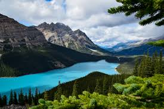
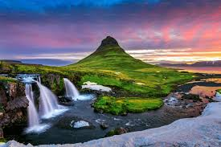
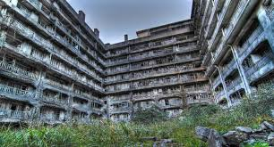
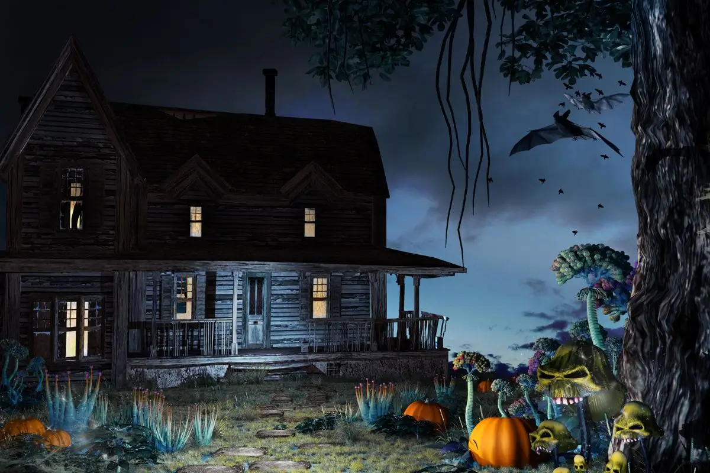

Top 5 Lugares Mais Bonitos Do Mundo.
Machu Picchu — Cidade inca nas montanhas andinas, famosa pelas ruínas históricas e pela vista
- Aurora Boreal na Islândia — O céu iluminado por luzes verdes e roxas cria um dos fenômenos naturais mais
bonitos do planeta.
- Santorini — Ilha grega com casas brancas, cúpulas azuis e pôr do sol famoso no mundo inteiro.
- Parque Nacional Banff — Lagos azul-turquesa cercados por montanhas nevadas.
- Cataratas do Iguaçu — Uma das maiores e mais impressionantes quedas d’água do mundo.


top 5 Lugares Mais Assustadores Do Mundo.
- Ilha das Bonecas — Pequena ilha cheia de bonecas antigas penduradas em árvores, cercada por histórias
sombrias.
- Catacumbas de Paris — Túneis subterrâneos com restos mortais de milhões de pessoas.
- Floresta de Aokigahara — Floresta conhecida pelo silêncio estranho e pelas lendas locais.
- Castelo de Bran — Associado à lenda do Drácula e cheio de atmosfera medieval sombria.
- Chernobyl — Cidade abandonada após o desastre nuclear de 1986, com prédios vazios e cenário inquietante.
.jpg)

